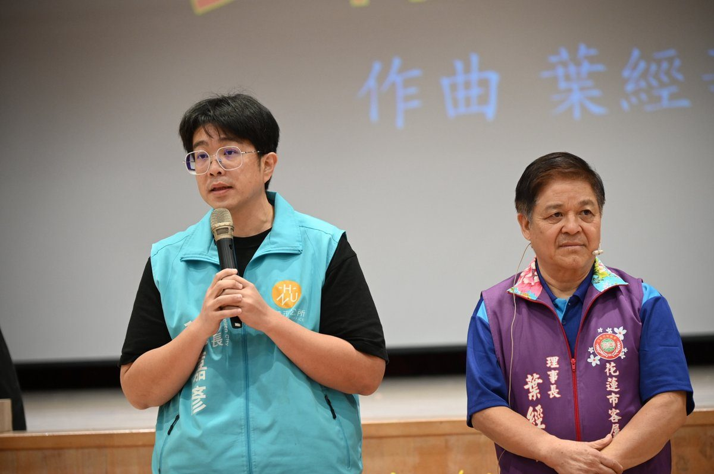

花蓮客家藝能成果展登場 魏嘉彥盼歌舞傳承薪火相傳

可樂電子報小編/編輯
悠揚的客家歌謠搭配精彩舞姿，展現客家文化豐富多元的藝術風貌。花蓮市客家行政事務所15日在中華國小學生活動中心舉辦115年度「客家藝能研習成果展暨客語歌曲創作發表」活動，集結客家歌謠研習班、山歌樂團及客家舞蹈班輪番登臺，透過傳統山歌、客語歌曲與舞蹈表演，展現學員平日努力研習的豐碩成果。現場吸引約400多位民眾共襄盛舉，在悠揚歌聲與熱情掌聲中，感受客家文化薪火相傳的活力。

本次活動由花蓮市客家行政事務所主辦、花蓮縣花蓮市客屬會協辦，花蓮市長魏嘉彥到場支持，與客屬會理事長葉經華、總幹事劉旭雄、客屬會會員及地方民眾共同欣賞精彩演出。活動由葉經華主持年度會務，劉旭雄帶領會員進行年度工作報告及臨時動議討論，透過會員交流凝聚共識，也為客家文化推廣與會務發展注入持續前進的力量。

魏嘉彥表示，他長期關心客家文化的保存與發展，除了持續推動客家藝能研習及文化交流活動，也十分重視族群語言的學習與傳承，透過推動客語能力認證，鼓勵市民踴躍學習客語，讓母語融入日常生活。他期盼藉由歌謠、舞蹈等多元藝術形式，讓年輕世代有更多機會親近客家文化，在學習與參與的過程中認識自身文化根源，進一步延續客語及傳統藝術的生命力，讓珍貴的客家文化代代相傳。

本次成果展節目豐富多元，舞蹈演出由市客客家歌謠班、菁華客家歌謠班及彩蓮舞蹈班接力登場，學員身著傳統客家服飾，以舞姿呈現客家先民開山闢地、勤奮刻苦的精神。隨著音樂節奏變換，舞者以整齊的動作與充滿活力的演出，展現客家文化兼具傳統底蘊與藝術美感的特色，也讓平日研習成果在舞臺上綻放光彩。

客語歌謠演出同樣是本次活動的一大亮點。花蓮市客屬會理事長葉經華同時也是歌謠班指導老師，畢業於花蓮師範學院音樂組，並具備客語歌謠類薪傳師資格，投入客語教唱已有20餘年。多年來致力於傳統客家歌謠的教學與推廣，帶領學員透過歌聲認識客語之美。本次演出除了傳統客家歌曲，也融入流行音樂改編作品《月亮代表𠊎个心》（月亮代表我的心），讓熟悉的旋律以客語重新詮釋，展現客家音樂貼近現代生活的多元樣貌。

此外，學員也演唱由葉經華作詞、編曲的《勸世歌》、《衰過無人連》及《少年讀書愛用心》等作品，透過歌詞傳遞生活智慧與勸學精神。演出過程中，葉經華不時在臺下為學員和聲，師生以歌聲相互呼應，展現多年教學累積的默契，也讓客語文化薪火相傳的精神在舞臺上具體呈現。除了團體合唱，活動也安排研習學員帶來客語個人演出，讓不同學習成果與音樂風格相互交流，展現客語歌曲豐富多元的藝術魅力。
📸 更多現場紀實影像


▶ 延伸觀看
📺 相關報導影片：點此於 YouTube 觀看完整報導
🌟 掌握花蓮在地第一手資訊・歡迎訂閱追蹤
深度紀實報導、在地精采影音專題，第一時間接收最新消息！